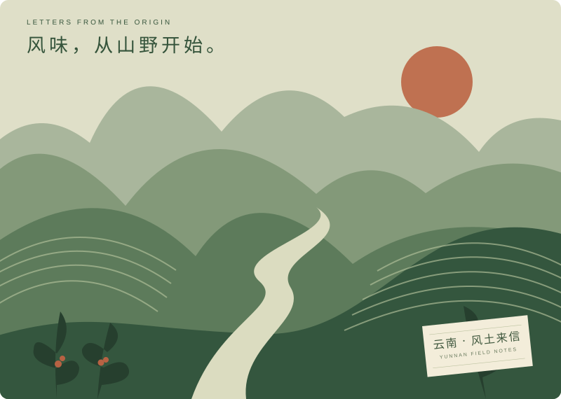
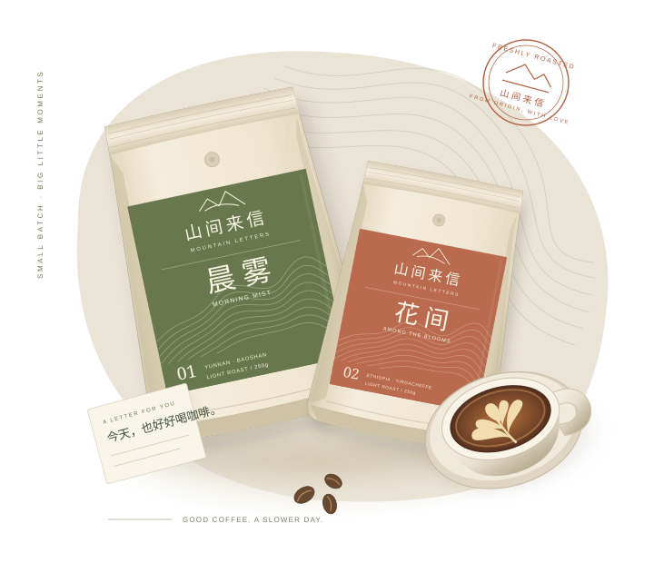

山野的风土，日常的温度。 / FIELD NOTES NO. 0102 A NOTE FROM THE MOUNTAINS
好咖啡的故事，
从一座山开始。
风、雨、海拔和土壤，为每一颗咖啡果写下独特的风味。我们想做的，是让这些细微的差别，在你的杯子里被好好读到。
山间来信，选择用简单的语言说咖啡。像红苹果一样清爽，像焦糖一样香甜。跟着自己的味觉走，就是很好的开始。
一杯好咖啡，慢慢来。FROM THE MOUNTAINS, WITH LOVE
一包咖啡，一封来自产地的信。
在熟悉的日子里，遇见一点新的风味。

今天，想喝点什么？
01 THE SEASONAL COLLECTION
从产地到杯中，
挑一封你想读的来信。
当前烘焙与冲煮方式暂时没有匹配的咖啡。
试试其他组合，或看看全部当季风味。
A LITTLE RITUAL, DELIVERED.
选一款喜欢的豆子，定一个舒服的节奏。
下一封风味来信，我们替你记着。

山野的风土，日常的温度。 / FIELD NOTES NO. 0102 A NOTE FROM THE MOUNTAINS
风、雨、海拔和土壤，为每一颗咖啡果写下独特的风味。我们想做的，是让这些细微的差别，在你的杯子里被好好读到。
山间来信，选择用简单的语言说咖啡。像红苹果一样清爽，像焦糖一样香甜。跟着自己的味觉走，就是很好的开始。
一杯好咖啡，慢慢来。03 YOUR FIRST GOOD CUP
一点小提示，
让每天的冲煮更轻松。
家里有磨豆机，推荐选原豆，在冲煮前现磨更容易保留香气。手边只有冲煮器具，可以在订阅时选择手冲、意式或法压研磨，我们会按所选方式准备相应粗细的咖啡粉。
浅烘通常更容易喝到花香、水果和明亮酸质；中烘偏向焦糖、坚果与平衡甜感；深烘更浓郁，常带黑巧和烘烤风味。它们是不同的味道方向，选择你喜欢的就好。
以每杯使用 15g 咖啡豆计算，一包 250g 大约能做 16 杯。如果每天喝一杯，可以选择每两周配送；偶尔喝一杯，四周一次会更从容。
开封后压出多余空气，封好袋口，放在阴凉、干燥、避光的地方。日常使用的一小包放在常温即可，取豆后及时密封，尽量在风味鲜活时喝完。
可以。点击页面右上角的「我的订阅」，随时调整咖啡、规格、研磨方式或配送周期；想慢下来时，也可以先暂停，准备好后再继续。